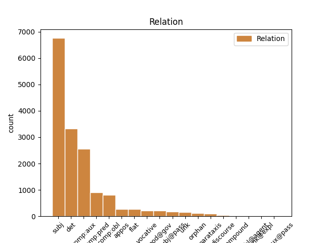
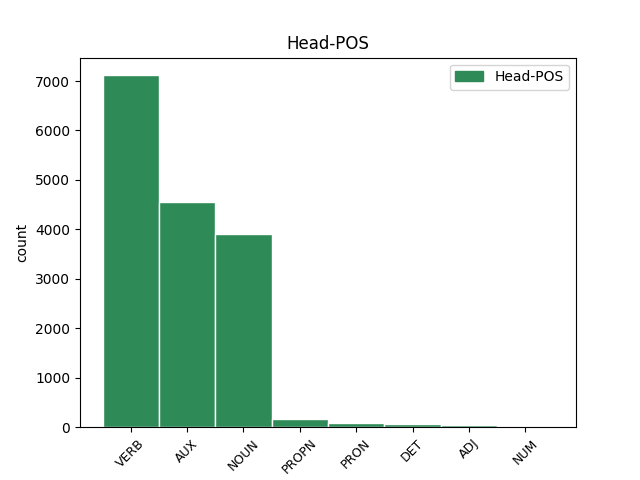
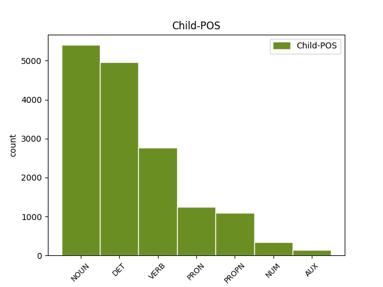

Distribution of features within this leaf



Agreement Rules sorted by frequency.
- When the dependent token is the subject(subj) of the head token, and the dependent token is NOUN.
1 Když _ _ _ _ 0 _ _ _
2 oslava _ _ _ _ 0 _ _ _
3 skončila _ _ _ _ 0 _ _ _
4 a _ _ _ _ 0 _ _ _
5 s _ _ _ _ 0 _ _ _
6 nadcházejícím _ _ _ _ 0 _ _ _
7 víkendem _ _ _ _ 0 _ _ _
8 se _ _ _ _ 0 _ _ _
9 budova _ _ _ _ 0 _ _ _
10 vyprázdnila _ _ _ _ 0 _ _ _
11 , _ _ _ _ 0 _ _ _
12 vyndal vyndat VERB VpMS----R-AA--- Animacy=Anim|Gender=Masc|Number=Sing|Polarity=Pos|Tense=Past|VerbForm=Part|Voice=Act 0 _ _ _
13 otec otec NOUN NNMS1-----A---- Animacy=Anim|Case=Nom|Gender=Masc|Number=Sing|Polarity=Pos 12 subj _ _
14 ze _ _ _ _ 0 _ _ _
15 svého _ _ _ _ 0 _ _ _
16 svazku _ _ _ _ 0 _ _ _
17 jeden _ _ _ _ 0 _ _ _
18 nenápadný _ _ _ _ 0 _ _ _
19 klíček _ _ _ _ 0 _ _ _
20 a _ _ _ _ 0 _ _ _
21 řekl _ _ _ _ 0 _ _ _
22 : _ _ _ _ 0 _ _ _
1 Aby _ _ _ _ 0 _ _ _
2 bys _ _ _ _ 0 _ _ _
3 toto _ _ _ _ 0 _ _ _
4 břímě _ _ _ _ 0 _ _ _
5 a _ _ _ _ 0 _ _ _
6 zodpovědnost _ _ _ _ 0 _ _ _
7 unesl _ _ _ _ 0 _ _ _
8 , _ _ _ _ 0 _ _ _
9 chci _ _ _ _ 0 _ _ _
10 ti _ _ _ _ 0 _ _ _
11 dát _ _ _ _ 0 _ _ _
12 i _ _ _ _ 0 _ _ _
13 tento _ _ _ _ 0 _ _ _
14 klíč _ _ _ _ 0 _ _ _
15 a _ _ _ _ 0 _ _ _
16 svěřit _ _ _ _ 0 _ _ _
17 tajemství _ _ _ _ 0 _ _ _
18 své svůj DET P8FS2---------1 Case=Gen|Gender=Fem|Number=Sing|Poss=Yes|PronType=Prs|Reflex=Yes 19 det _ _
19 energie energie NOUN NNFS2-----A---- Case=Gen|Gender=Fem|Number=Sing|Polarity=Pos 0 _ _ _
20 a _ _ _ _ 0 _ _ _
21 úspěchu _ _ _ _ 0 _ _ _
22 . _ _ _ _ 0 _ _ _
23 " _ _ _ _ 0 _ _ _
1 Aby _ _ _ _ 0 _ _ _
2 bys být AUX Vc-S---2------- Mood=Cnd|Number=Sing|Person=2|VerbForm=Fin 0 _ _ _
3 toto _ _ _ _ 0 _ _ _
4 břímě _ _ _ _ 0 _ _ _
5 a _ _ _ _ 0 _ _ _
6 zodpovědnost _ _ _ _ 0 _ _ _
7 unesl unést VERB VpMS----R-AA--- Animacy=Anim|Gender=Masc|Number=Sing|Polarity=Pos|Tense=Past|VerbForm=Part|Voice=Act 2 comp:aux _ SpaceAfter=No
8 , _ _ _ _ 0 _ _ _
9 chci _ _ _ _ 0 _ _ _
10 ti _ _ _ _ 0 _ _ _
11 dát _ _ _ _ 0 _ _ _
12 i _ _ _ _ 0 _ _ _
13 tento _ _ _ _ 0 _ _ _
14 klíč _ _ _ _ 0 _ _ _
15 a _ _ _ _ 0 _ _ _
16 svěřit _ _ _ _ 0 _ _ _
17 tajemství _ _ _ _ 0 _ _ _
18 své _ _ _ _ 0 _ _ _
19 energie _ _ _ _ 0 _ _ _
20 a _ _ _ _ 0 _ _ _
21 úspěchu _ _ _ _ 0 _ _ _
22 . _ _ _ _ 0 _ _ _
23 " _ _ _ _ 0 _ _ _
1 " _ _ _ _ 0 _ _ _
2 V _ _ _ _ 0 _ _ _
3 našem _ _ _ _ 0 _ _ _
4 podniku _ _ _ _ 0 _ _ _
5 , _ _ _ _ 0 _ _ _
6 který který DET P4IS1---------- Animacy=Inan|Case=Nom|Gender=Masc|Number=Sing|PronType=Int,Rel 7 subj _ _
7 je být AUX VB-S---3P-AA--- Mood=Ind|Number=Sing|Person=3|Polarity=Pos|Tense=Pres|VerbForm=Fin|Voice=Act 0 _ _ _
8 teď _ _ _ _ 0 _ _ _
9 především _ _ _ _ 0 _ _ _
10 tvůj _ _ _ _ 0 _ _ _
11 , _ _ _ _ 0 _ _ _
12 jsi _ _ _ _ 0 _ _ _
13 dospěl _ _ _ _ 0 _ _ _
14 až _ _ _ _ 0 _ _ _
15 k _ _ _ _ 0 _ _ _
16 velké _ _ _ _ 0 _ _ _
17 zodpovědnosti _ _ _ _ 0 _ _ _
18 . _ _ _ _ 0 _ _ _
1 Cadik Cadik PROPN NNMS1-----A---- Animacy=Anim|Case=Nom|Gender=Masc|NameType=Giv|Number=Sing|Polarity=Pos 7 subj _ _
2 rabi _ _ _ _ 0 _ _ _
3 Elimelech _ _ _ _ 0 _ _ _
4 z _ _ _ _ 0 _ _ _
5 Lyžeňska _ _ _ _ 0 _ _ _
6 jednou _ _ _ _ 0 _ _ _
7 řekl říci VERB VpMS----R-AA--- Animacy=Anim|Gender=Masc|Number=Sing|Polarity=Pos|Tense=Past|VerbForm=Part|Voice=Act 0 _ _ _
8 svým _ _ _ _ 0 _ _ _
9 žákům _ _ _ _ 0 _ _ _
10 : _ _ _ _ 0 _ _ _
1 " _ _ _ _ 0 _ _ _
2 Ty ty PRON PP-S1--2------- Case=Nom|Number=Sing|Person=2|PronType=Prs 3 subj _ _
3 víš vědět VERB VB-S---2P-AA--- Mood=Ind|Number=Sing|Person=2|Polarity=Pos|Tense=Pres|VerbForm=Fin|Voice=Act 0 _ _ _
4 , _ _ _ _ 0 _ _ _
5 že _ _ _ _ 0 _ _ _
6 neumím _ _ _ _ 0 _ _ _
7 plavat _ _ _ _ 0 _ _ _
8 . _ _ _ _ 0 _ _ _
1 " _ _ _ _ 0 _ _ _
2 Možná _ _ _ _ 0 _ _ _
3 je být AUX VB-S---3P-AA--- Mood=Ind|Number=Sing|Person=3|Polarity=Pos|Tense=Pres|VerbForm=Fin|Voice=Act 0 _ _ _
4 tenhle _ _ _ _ 0 _ _ _
5 pták _ _ _ _ 0 _ _ _
6 nějaký _ _ _ _ 0 _ _ _
7 příbuzný příbuzný NOUN NNMS1-----A---- Animacy=Anim|Case=Nom|Gender=Masc|Number=Sing|Polarity=Pos 3 comp:pred _ _
8 mého _ _ _ _ 0 _ _ _
9 papouška _ _ _ _ 0 _ _ _
10 a _ _ _ _ 0 _ _ _
11 ta _ _ _ _ 0 _ _ _
12 zpráva _ _ _ _ 0 _ _ _
13 ho _ _ _ _ 0 _ _ _
14 vyděsila _ _ _ _ 0 _ _ _
15 k _ _ _ _ 0 _ _ _
16 smrti _ _ _ _ 0 _ _ _
17 , _ _ _ _ 0 _ _ _
18 " _ _ _ _ 0 _ _ _
19 napadlo _ _ _ _ 0 _ _ _
20 sklíčeného _ _ _ _ 0 _ _ _
21 obchodníka _ _ _ _ 0 _ _ _
22 . _ _ _ _ 0 _ _ _
1 A _ _ _ _ 0 _ _ _
2 až _ _ _ _ 0 _ _ _
3 tu _ _ _ _ 0 _ _ _
4 vůbec _ _ _ _ 0 _ _ _
5 nebudu _ _ _ _ 0 _ _ _
6 , _ _ _ _ 0 _ _ _
7 přidám přidat VERB VB-S---1P-AA--- Mood=Ind|Number=Sing|Person=1|Polarity=Pos|Tense=Pres|VerbForm=Fin|Voice=Act 0 _ _ _
8 ti ty PRON PH-S3--2------- Case=Dat|Number=Sing|Person=2|PronType=Prs|Variant=Short 7 comp:obl _ _
9 i _ _ _ _ 0 _ _ _
10 to _ _ _ _ 0 _ _ _
11 poslední _ _ _ _ 0 _ _ _
12 . _ _ _ _ 0 _ _ _
1 Král král NOUN NNMS1-----A---- Animacy=Anim|Case=Nom|Gender=Masc|Number=Sing|Polarity=Pos 0 _ _ _
2 Šalamoun Šalamoun PROPN NNMS1-----A---- Animacy=Anim|Case=Nom|Gender=Masc|NameType=Giv|Number=Sing|Polarity=Pos 1 flat _ _
3 vyprávěl _ _ _ _ 0 _ _ _
4 majiteli _ _ _ _ 0 _ _ _
5 , _ _ _ _ 0 _ _ _
6 co _ _ _ _ 0 _ _ _
7 mu _ _ _ _ 0 _ _ _
8 slavík _ _ _ _ 0 _ _ _
9 vyprávěl _ _ _ _ 0 _ _ _
10 . _ _ _ _ 0 _ _ _
1 " _ _ _ _ 0 _ _ _
2 V _ _ _ _ 0 _ _ _
3 našem _ _ _ _ 0 _ _ _
4 podniku _ _ _ _ 0 _ _ _
5 , _ _ _ _ 0 _ _ _
6 který _ _ _ _ 0 _ _ _
7 je být AUX VB-S---3P-AA--- Mood=Ind|Number=Sing|Person=3|Polarity=Pos|Tense=Pres|VerbForm=Fin|Voice=Act 0 _ _ _
8 teď _ _ _ _ 0 _ _ _
9 především _ _ _ _ 0 _ _ _
10 tvůj tvůj DET PSIS1-S2------- Animacy=Inan|Case=Nom|Gender=Masc|Number=Sing|Number[psor]=Sing|Person=2|Poss=Yes|PronType=Prs 7 comp:pred _ SpaceAfter=No
11 , _ _ _ _ 0 _ _ _
12 jsi _ _ _ _ 0 _ _ _
13 dospěl _ _ _ _ 0 _ _ _
14 až _ _ _ _ 0 _ _ _
15 k _ _ _ _ 0 _ _ _
16 velké _ _ _ _ 0 _ _ _
17 zodpovědnosti _ _ _ _ 0 _ _ _
18 . _ _ _ _ 0 _ _ _
1 To _ _ _ _ 0 _ _ _
2 jsem _ _ _ _ 0 _ _ _
3 já já PRON PP-S1--1------- Case=Nom|Number=Sing|Person=1|PronType=Prs 0 _ _ _
4 , _ _ _ _ 0 _ _ _
5 tvůj _ _ _ _ 0 _ _ _
6 syn syn NOUN NNMS1-----A---- Animacy=Anim|Case=Nom|Gender=Masc|Number=Sing|Polarity=Pos 3 appos _ SpaceAfter=No
7 ! _ _ _ _ 0 _ _ _
8 " _ _ _ _ 0 _ _ _
9 volal _ _ _ _ 0 _ _ _
10 . _ _ _ _ 0 _ _ _
1 V _ _ _ _ 0 _ _ _
2 den _ _ _ _ 0 _ _ _
3 pětašedesátých _ _ _ _ 0 _ _ _
4 narozenin _ _ _ _ 0 _ _ _
5 se _ _ _ _ 0 _ _ _
6 stáhl _ _ _ _ 0 _ _ _
7 z _ _ _ _ 0 _ _ _
8 každodenního _ _ _ _ 0 _ _ _
9 provozu _ _ _ _ 0 _ _ _
10 firmy _ _ _ _ 0 _ _ _
11 a _ _ _ _ 0 _ _ _
12 při _ _ _ _ 0 _ _ _
13 důstojné _ _ _ _ 0 _ _ _
14 oslavě _ _ _ _ 0 _ _ _
15 symbolicky _ _ _ _ 0 _ _ _
16 předal předat VERB VpMS----R-AA--- Animacy=Anim|Gender=Masc|Number=Sing|Polarity=Pos|Tense=Past|VerbForm=Part|Voice=Act 0 _ _ _
17 svému _ _ _ _ 0 _ _ _
18 synovi syn NOUN NNMS3-----A---- Animacy=Anim|Case=Dat|Gender=Masc|Number=Sing|Polarity=Pos 16 comp:obl _ _
19 klíč _ _ _ _ 0 _ _ _
20 k _ _ _ _ 0 _ _ _
21 vedení _ _ _ _ 0 _ _ _
22 podniku _ _ _ _ 0 _ _ _
23 . _ _ _ _ 0 _ _ _
1 Ale _ _ _ _ 0 _ _ _
2 malé _ _ _ _ 0 _ _ _
3 okno okno NOUN NNNS1-----A---- Case=Nom|Gender=Neut|Number=Sing|Polarity=Pos 4 subj@pass _ _
4 bylo být AUX VpNS----R-AA--- Gender=Neut|Number=Sing|Polarity=Pos|Tense=Past|VerbForm=Part|Voice=Act 0 _ _ _
5 vsazeno _ _ _ _ 0 _ _ _
6 tak _ _ _ _ 0 _ _ _
7 vysoko _ _ _ _ 0 _ _ _
8 , _ _ _ _ 0 _ _ _
9 že _ _ _ _ 0 _ _ _
10 zahlédl _ _ _ _ 0 _ _ _
11 jen _ _ _ _ 0 _ _ _
12 kousek _ _ _ _ 0 _ _ _
13 nebe _ _ _ _ 0 _ _ _
14 . _ _ _ _ 0 _ _ _
1 Užívej užívat VERB Vi-S---2--A---- Mood=Imp|Number=Sing|Person=2|Polarity=Pos|VerbForm=Fin 0 _ _ _
2 , _ _ _ _ 0 _ _ _
3 člověče člověk NOUN NNMS5-----A---- Animacy=Anim|Case=Voc|Gender=Masc|Number=Sing|Polarity=Pos 1 vocative _ SpaceAfter=No
4 , _ _ _ _ 0 _ _ _
5 svého _ _ _ _ 0 _ _ _
6 života _ _ _ _ 0 _ _ _
7 a _ _ _ _ 0 _ _ _
8 dbej _ _ _ _ 0 _ _ _
9 na _ _ _ _ 0 _ _ _
10 to _ _ _ _ 0 _ _ _
11 , _ _ _ _ 0 _ _ _
12 aby _ _ _ _ 0 _ _ _
13 by _ _ _ _ 0 _ _ _
14 jsi _ _ _ _ 0 _ _ _
15 si _ _ _ _ 0 _ _ _
16 byl _ _ _ _ 0 _ _ _
17 vědom _ _ _ _ 0 _ _ _
18 jeho _ _ _ _ 0 _ _ _
19 ceny _ _ _ _ 0 _ _ _
20 . _ _ _ _ 0 _ _ _
21 " _ _ _ _ 0 _ _ _
1 Užívej _ _ _ _ 0 _ _ _
2 , _ _ _ _ 0 _ _ _
3 člověče _ _ _ _ 0 _ _ _
4 , _ _ _ _ 0 _ _ _
5 svého _ _ _ _ 0 _ _ _
6 života _ _ _ _ 0 _ _ _
7 a _ _ _ _ 0 _ _ _
8 dbej _ _ _ _ 0 _ _ _
9 na _ _ _ _ 0 _ _ _
10 to _ _ _ _ 0 _ _ _
11 , _ _ _ _ 0 _ _ _
12 aby _ _ _ _ 0 _ _ _
13 by _ _ _ _ 0 _ _ _
14 jsi být AUX VB-S---2P-AA--- Mood=Ind|Number=Sing|Person=2|Polarity=Pos|Tense=Pres|VerbForm=Fin|Voice=Act 0 _ _ _
15 si _ _ _ _ 0 _ _ _
16 byl být AUX VpMS----R-AA--- Animacy=Anim|Gender=Masc|Number=Sing|Polarity=Pos|Tense=Past|VerbForm=Part|Voice=Act 14 comp:aux _ _
17 vědom _ _ _ _ 0 _ _ _
18 jeho _ _ _ _ 0 _ _ _
19 ceny _ _ _ _ 0 _ _ _
20 . _ _ _ _ 0 _ _ _
21 " _ _ _ _ 0 _ _ _
1 " _ _ _ _ 0 _ _ _
2 Jeden jeden NUM ClMS1---------- Animacy=Anim|Case=Nom|Gender=Masc|Number=Sing|NumForm=Word|NumType=Card|NumValue=1,2,3 7 subj _ _
3 z _ _ _ _ 0 _ _ _
4 tvých _ _ _ _ 0 _ _ _
5 příbuzných _ _ _ _ 0 _ _ _
6 se _ _ _ _ 0 _ _ _
7 skácel skácet VERB VpMS----R-AA--- Animacy=Anim|Gender=Masc|Number=Sing|Polarity=Pos|Tense=Past|VerbForm=Part|Voice=Act 0 _ _ _
8 mrtev _ _ _ _ 0 _ _ _
9 k _ _ _ _ 0 _ _ _
10 zemi _ _ _ _ 0 _ _ _
11 , _ _ _ _ 0 _ _ _
12 když _ _ _ _ 0 _ _ _
13 jsem _ _ _ _ 0 _ _ _
14 mluvil _ _ _ _ 0 _ _ _
15 o _ _ _ _ 0 _ _ _
16 tobě _ _ _ _ 0 _ _ _
17 a _ _ _ _ 0 _ _ _
18 o _ _ _ _ 0 _ _ _
19 tvém _ _ _ _ 0 _ _ _
20 životě _ _ _ _ 0 _ _ _
21 u _ _ _ _ 0 _ _ _
22 mě _ _ _ _ 0 _ _ _
23 . _ _ _ _ 0 _ _ _
1 Celý _ _ _ _ 0 _ _ _
2 natěšený _ _ _ _ 0 _ _ _
3 chtěl _ _ _ _ 0 _ _ _
4 už _ _ _ _ 0 _ _ _
5 už _ _ _ _ 0 _ _ _
6 zavolat _ _ _ _ 0 _ _ _
7 na _ _ _ _ 0 _ _ _
8 svou _ _ _ _ 0 _ _ _
9 ženu _ _ _ _ 0 _ _ _
10 , _ _ _ _ 0 _ _ _
11 a _ _ _ _ 0 _ _ _
12 v _ _ _ _ 0 _ _ _
13 tom _ _ _ _ 0 _ _ _
14 otevřeným _ _ _ _ 0 _ _ _
15 oknem _ _ _ _ 0 _ _ _
16 do _ _ _ _ 0 _ _ _
17 ložnice _ _ _ _ 0 _ _ _
18 zaslechl zaslechnout VERB VpMS----R-AA--1 Animacy=Anim|Gender=Masc|Number=Sing|Polarity=Pos|Tense=Past|VerbForm=Part|Voice=Act 0 _ _ _
19 její _ _ _ _ 0 _ _ _
20 hlas _ _ _ _ 0 _ _ _
21 , _ _ _ _ 0 _ _ _
22 na _ _ _ _ 0 _ _ _
23 někoho _ _ _ _ 0 _ _ _
24 mluvila mluvit VERB VpFS----R-AA--- Gender=Fem|Number=Sing|Polarity=Pos|Tense=Past|VerbForm=Part|Voice=Act 18 parataxis _ SpaceAfter=No
25 . _ _ _ _ 0 _ _ _
1 Jakmile _ _ _ _ 0 _ _ _
2 některý _ _ _ _ 0 _ _ _
3 z _ _ _ _ 0 _ _ _
4 nich _ _ _ _ 0 _ _ _
5 zavolal _ _ _ _ 0 _ _ _
6 : _ _ _ _ 0 _ _ _
7 " _ _ _ _ 0 _ _ _
8 Hej _ _ _ _ 0 _ _ _
9 , _ _ _ _ 0 _ _ _
10 Mirco Mirco PROPN NNMS5-----A---- Animacy=Anim|Case=Voc|Gender=Masc|NameType=Giv|Number=Sing|Polarity=Pos 12 vocative _ SpaceAfter=No
11 , _ _ _ _ 0 _ _ _
12 pojď jít VERB Vi-S---2--A---1 Mood=Imp|Number=Sing|Person=2|Polarity=Pos|VerbForm=Fin 0 _ _ _
13 sem _ _ _ _ 0 _ _ _
14 ! _ _ _ _ 0 _ _ _
15 " _ _ _ _ 0 _ _ _
16 , _ _ _ _ 0 _ _ _
17 aby _ _ _ _ 0 _ _ _
18 by _ _ _ _ 0 _ _ _
19 mu _ _ _ _ 0 _ _ _
20 nabídl _ _ _ _ 0 _ _ _
21 mince _ _ _ _ 0 _ _ _
22 na _ _ _ _ 0 _ _ _
23 výběr _ _ _ _ 0 _ _ _
24 , _ _ _ _ 0 _ _ _
25 a _ _ _ _ 0 _ _ _
26 Mirco _ _ _ _ 0 _ _ _
27 se _ _ _ _ 0 _ _ _
28 přihlouple _ _ _ _ 0 _ _ _
29 zašklebil _ _ _ _ 0 _ _ _
30 , _ _ _ _ 0 _ _ _
31 lidé _ _ _ _ 0 _ _ _
32 se _ _ _ _ 0 _ _ _
33 už _ _ _ _ 0 _ _ _
34 začínali _ _ _ _ 0 _ _ _
35 pobaveně _ _ _ _ 0 _ _ _
36 pochechtávat _ _ _ _ 0 _ _ _
37 a _ _ _ _ 0 _ _ _
38 předháněli _ _ _ _ 0 _ _ _
39 se _ _ _ _ 0 _ _ _
40 , _ _ _ _ 0 _ _ _
41 kdo _ _ _ _ 0 _ _ _
42 dá _ _ _ _ 0 _ _ _
43 Mircovi _ _ _ _ 0 _ _ _
44 dříve _ _ _ _ 0 _ _ _
45 vybrat _ _ _ _ 0 _ _ _
46 . _ _ _ _ 0 _ _ _
1 Vy _ _ _ _ 0 _ _ _
2 protivní _ _ _ _ 0 _ _ _
3 žebráci _ _ _ _ 0 _ _ _
4 a _ _ _ _ 0 _ _ _
5 povaleči _ _ _ _ 0 _ _ _
6 z _ _ _ _ 0 _ _ _
7 města _ _ _ _ 0 _ _ _
8 , _ _ _ _ 0 _ _ _
9 já _ _ _ _ 0 _ _ _
10 vám _ _ _ _ 0 _ _ _
11 ukážu ukázat VERB VB-S---1P-AA--- Mood=Ind|Number=Sing|Person=1|Polarity=Pos|Tense=Pres|VerbForm=Fin|Voice=Act 0 _ _ _
12 ! _ _ _ _ 0 _ _ _
13 " _ _ _ _ 0 _ _ _
14 zuřil zuřit VERB VpMS----R-AA--- Animacy=Anim|Gender=Masc|Number=Sing|Polarity=Pos|Tense=Past|VerbForm=Part|Voice=Act 11 unk _ _
15 staroch _ _ _ _ 0 _ _ _
16 . _ _ _ _ 0 _ _ _
1 " _ _ _ _ 0 _ _ _
2 No _ _ _ _ 0 _ _ _
3 , _ _ _ _ 0 _ _ _
4 jak _ _ _ _ 0 _ _ _
5 to _ _ _ _ 0 _ _ _
6 mám _ _ _ _ 0 _ _ _
7 říct _ _ _ _ 0 _ _ _
8 ? _ _ _ _ 0 _ _ _
9 " _ _ _ _ 0 _ _ _
10 zdráhal zdráhat VERB VpMS----R-AA--- Animacy=Anim|Gender=Masc|Number=Sing|Polarity=Pos|Tense=Past|VerbForm=Part|Voice=Act 0 _ _ _
11 se _ _ _ _ 0 _ _ _
12 viditelně _ _ _ _ 0 _ _ _
13 rozpačitý _ _ _ _ 0 _ _ _
14 komisař _ _ _ _ 0 _ _ _
15 , _ _ _ _ 0 _ _ _
16 ale _ _ _ _ 0 _ _ _
17 pak _ _ _ _ 0 _ _ _
18 jako _ _ _ _ 0 _ _ _
19 by _ _ _ _ 0 _ _ _
20 si _ _ _ _ 0 _ _ _
21 právě _ _ _ _ 0 _ _ _
22 uvědomil _ _ _ _ 0 _ _ _
23 směšnost _ _ _ _ 0 _ _ _
24 situace _ _ _ _ 0 _ _ _
25 , _ _ _ _ 0 _ _ _
26 řekl říci VERB VpMS----R-AA--- Animacy=Anim|Gender=Masc|Number=Sing|Polarity=Pos|Tense=Past|VerbForm=Part|Voice=Act 10 orphan _ SpaceAfter=No
27 : _ _ _ _ 0 _ _ _
1 Průvodce _ _ _ _ 0 _ _ _
2 totiž _ _ _ _ 0 _ _ _
3 informoval _ _ _ _ 0 _ _ _
4 o _ _ _ _ 0 _ _ _
5 tom _ _ _ _ 0 _ _ _
6 , _ _ _ _ 0 _ _ _
7 jak _ _ _ _ 0 _ _ _
8 je _ _ _ _ 0 _ _ _
9 vesnička _ _ _ _ 0 _ _ _
10 romantická _ _ _ _ 0 _ _ _
11 , _ _ _ _ 0 _ _ _
12 výhled výhled NOUN NNIS1-----A---- Animacy=Inan|Case=Nom|Gender=Masc|Number=Sing|Polarity=Pos 0 _ _ _
13 velkolepý _ _ _ _ 0 _ _ _
14 , _ _ _ _ 0 _ _ _
15 jídlo jídlo NOUN NNNS1-----A---- Case=Nom|Gender=Neut|Number=Sing|Polarity=Pos 12 orphan _ _
16 znamenité _ _ _ _ 0 _ _ _
17 a _ _ _ _ 0 _ _ _
18 ceny _ _ _ _ 0 _ _ _
19 tak _ _ _ _ 0 _ _ _
20 nízké _ _ _ _ 0 _ _ _
21 , _ _ _ _ 0 _ _ _
22 že _ _ _ _ 0 _ _ _
23 si _ _ _ _ 0 _ _ _
24 dokonce _ _ _ _ 0 _ _ _
25 vesnický _ _ _ _ 0 _ _ _
26 blázen _ _ _ _ 0 _ _ _
27 Mirco _ _ _ _ 0 _ _ _
28 raději _ _ _ _ 0 _ _ _
29 vybere _ _ _ _ 0 _ _ _
30 minci _ _ _ _ 0 _ _ _
31 v _ _ _ _ 0 _ _ _
32 hodnotě _ _ _ _ 0 _ _ _
33 čtvrt _ _ _ _ 0 _ _ _
34 dináru _ _ _ _ 0 _ _ _
35 , _ _ _ _ 0 _ _ _
36 protože _ _ _ _ 0 _ _ _
37 je _ _ _ _ 0 _ _ _
38 na _ _ _ _ 0 _ _ _
39 pohled _ _ _ _ 0 _ _ _
40 větší _ _ _ _ 0 _ _ _
41 než _ _ _ _ 0 _ _ _
42 mince _ _ _ _ 0 _ _ _
43 v _ _ _ _ 0 _ _ _
44 hodnotě _ _ _ _ 0 _ _ _
45 půl _ _ _ _ 0 _ _ _
46 dináru _ _ _ _ 0 _ _ _
47 . _ _ _ _ 0 _ _ _
1 " _ _ _ _ 0 _ _ _
2 Můj _ _ _ _ 0 _ _ _
3 milý _ _ _ _ 0 _ _ _
4 , _ _ _ _ 0 _ _ _
5 jehož _ _ _ _ 0 _ _ _
6 dítě _ _ _ _ 0 _ _ _
7 nosím _ _ _ _ 0 _ _ _
8 , _ _ _ _ 0 _ _ _
9 mě _ _ _ _ 0 _ _ _
10 opustil _ _ _ _ 0 _ _ _
11 kvůli _ _ _ _ 0 _ _ _
12 jiné _ _ _ _ 0 _ _ _
13 , _ _ _ _ 0 _ _ _
14 protože _ _ _ _ 0 _ _ _
15 se _ _ _ _ 0 _ _ _
16 mu _ _ _ _ 0 _ _ _
17 nelíbilo líbit VERB VpNS----R-NA--- Gender=Neut|Number=Sing|Polarity=Neg|Tense=Past|VerbForm=Part|Voice=Act 0 _ _ _
18 , _ _ _ _ 0 _ _ _
19 jak _ _ _ _ 0 _ _ _
20 teď _ _ _ _ 0 _ _ _
21 vypadám vypadat VERB VB-S---1P-AA--- Mood=Ind|Number=Sing|Person=1|Polarity=Pos|Tense=Pres|VerbForm=Fin|Voice=Act 17 subj _ _
22 a _ _ _ _ 0 _ _ _
23 už _ _ _ _ 0 _ _ _
24 se _ _ _ _ 0 _ _ _
25 na _ _ _ _ 0 _ _ _
26 mě _ _ _ _ 0 _ _ _
27 nemohl _ _ _ _ 0 _ _ _
28 v _ _ _ _ 0 _ _ _
29 tomhle _ _ _ _ 0 _ _ _
30 stavu _ _ _ _ 0 _ _ _
31 dívat _ _ _ _ 0 _ _ _
32 . _ _ _ _ 0 _ _ _
1 " _ _ _ _ 0 _ _ _
2 Mám _ _ _ _ 0 _ _ _
3 dvě _ _ _ _ 0 _ _ _
4 dcery _ _ _ _ 0 _ _ _
5 , _ _ _ _ 0 _ _ _
6 " _ _ _ _ 0 _ _ _
7 vysvětlovala vysvětlovat VERB VpFS----R-AA--- Gender=Fem|Number=Sing|Polarity=Pos|Tense=Past|VerbForm=Part|Voice=Act 0 _ _ _
8 vzlykajíc vzlykat VERB VeFS------A---- Aspect=Imp|Gender=Fem|Number=Sing|Polarity=Pos|Tense=Pres|VerbForm=Conv|Voice=Act 7 comp:pred _ SpaceAfter=No
9 . _ _ _ _ 0 _ _ _
1 " _ _ _ _ 0 _ _ _
2 Váš _ _ _ _ 0 _ _ _
3 účet účet NOUN NNIS1-----A---- Animacy=Inan|Case=Nom|Gender=Masc|Number=Sing|Polarity=Pos 8 unk _ SpaceAfter=No
4 , _ _ _ _ 0 _ _ _
5 pane _ _ _ _ 0 _ _ _
6 , _ _ _ _ 0 _ _ _
7 " _ _ _ _ 0 _ _ _
8 řekl říci VERB VpMS----R-AA--- Animacy=Anim|Gender=Masc|Number=Sing|Polarity=Pos|Tense=Past|VerbForm=Part|Voice=Act 0 _ _ _
9 hostitel _ _ _ _ 0 _ _ _
10 , _ _ _ _ 0 _ _ _
11 a _ _ _ _ 0 _ _ _
12 jako _ _ _ _ 0 _ _ _
13 by _ _ _ _ 0 _ _ _
14 tímto _ _ _ _ 0 _ _ _
15 slovem _ _ _ _ 0 _ _ _
16 pronesl _ _ _ _ 0 _ _ _
17 zaklínadlo _ _ _ _ 0 _ _ _
18 , _ _ _ _ 0 _ _ _
19 proměnil _ _ _ _ 0 _ _ _
20 se _ _ _ _ 0 _ _ _
21 jeho _ _ _ _ 0 _ _ _
22 obličej _ _ _ _ 0 _ _ _
23 v _ _ _ _ 0 _ _ _
24 ďábelsky _ _ _ _ 0 _ _ _
25 šeredný _ _ _ _ 0 _ _ _
26 úšklebek _ _ _ _ 0 _ _ _
27 . _ _ _ _ 0 _ _ _
1 To ten DET PDNS1---------- Case=Nom|Gender=Neut|Number=Sing|PronType=Dem 3 subj@pass _ _
2 se _ _ _ _ 0 _ _ _
3 doneslo donést VERB VpNS----R-AA--- Gender=Neut|Number=Sing|Polarity=Pos|Tense=Past|VerbForm=Part|Voice=Act 0 _ _ _
4 jeho _ _ _ _ 0 _ _ _
5 matce _ _ _ _ 0 _ _ _
6 , _ _ _ _ 0 _ _ _
7 která _ _ _ _ 0 _ _ _
8 si _ _ _ _ 0 _ _ _
9 jako _ _ _ _ 0 _ _ _
10 lékařka _ _ _ _ 0 _ _ _
11 získala _ _ _ _ 0 _ _ _
12 úctu _ _ _ _ 0 _ _ _
13 i _ _ _ _ 0 _ _ _
14 bohatství _ _ _ _ 0 _ _ _
15 . _ _ _ _ 0 _ _ _
1 Jakmile _ _ _ _ 0 _ _ _
2 některý _ _ _ _ 0 _ _ _
3 z _ _ _ _ 0 _ _ _
4 nich _ _ _ _ 0 _ _ _
5 zavolal _ _ _ _ 0 _ _ _
6 : _ _ _ _ 0 _ _ _
7 " _ _ _ _ 0 _ _ _
8 Hej _ _ _ _ 0 _ _ _
9 , _ _ _ _ 0 _ _ _
10 Mirco _ _ _ _ 0 _ _ _
11 , _ _ _ _ 0 _ _ _
12 pojď _ _ _ _ 0 _ _ _
13 sem _ _ _ _ 0 _ _ _
14 ! _ _ _ _ 0 _ _ _
15 " _ _ _ _ 0 _ _ _
16 , _ _ _ _ 0 _ _ _
17 aby _ _ _ _ 0 _ _ _
18 by _ _ _ _ 0 _ _ _
19 mu _ _ _ _ 0 _ _ _
20 nabídl _ _ _ _ 0 _ _ _
21 mince _ _ _ _ 0 _ _ _
22 na _ _ _ _ 0 _ _ _
23 výběr _ _ _ _ 0 _ _ _
24 , _ _ _ _ 0 _ _ _
25 a _ _ _ _ 0 _ _ _
26 Mirco _ _ _ _ 0 _ _ _
27 se _ _ _ _ 0 _ _ _
28 přihlouple _ _ _ _ 0 _ _ _
29 zašklebil _ _ _ _ 0 _ _ _
30 , _ _ _ _ 0 _ _ _
31 lidé _ _ _ _ 0 _ _ _
32 se _ _ _ _ 0 _ _ _
33 už _ _ _ _ 0 _ _ _
34 začínali _ _ _ _ 0 _ _ _
35 pobaveně _ _ _ _ 0 _ _ _
36 pochechtávat _ _ _ _ 0 _ _ _
37 a _ _ _ _ 0 _ _ _
38 předháněli _ _ _ _ 0 _ _ _
39 se _ _ _ _ 0 _ _ _
40 , _ _ _ _ 0 _ _ _
41 kdo _ _ _ _ 0 _ _ _
42 dá dát VERB VB-S---3P-AA--- Mood=Ind|Number=Sing|Person=3|Polarity=Pos|Tense=Pres|VerbForm=Fin|Voice=Act 0 _ _ _
43 Mircovi Mirco PROPN NNMS3-----A---- Animacy=Anim|Case=Dat|Gender=Masc|NameType=Giv|Number=Sing|Polarity=Pos 42 comp:obl _ _
44 dříve _ _ _ _ 0 _ _ _
45 vybrat _ _ _ _ 0 _ _ _
46 . _ _ _ _ 0 _ _ _
1 Osud _ _ _ _ 0 _ _ _
2 ale _ _ _ _ 0 _ _ _
3 brzy _ _ _ _ 0 _ _ _
4 přichystal _ _ _ _ 0 _ _ _
5 mladému _ _ _ _ 0 _ _ _
6 štěstí _ _ _ _ 0 _ _ _
7 první _ _ _ _ 0 _ _ _
8 zkoušku zkouška NOUN NNFS4-----A---- Case=Acc|Gender=Fem|Number=Sing|Polarity=Pos 0 _ _ _
9 : _ _ _ _ 0 _ _ _
10 tři _ _ _ _ 0 _ _ _
11 měsíce _ _ _ _ 0 _ _ _
12 po _ _ _ _ 0 _ _ _
13 svatbě _ _ _ _ 0 _ _ _
14 se _ _ _ _ 0 _ _ _
15 musel muset VERB VpMS----R-AA--- Animacy=Anim|Gender=Masc|Number=Sing|Polarity=Pos|Tense=Past|VerbForm=Part|Voice=Act 8 appos _ _
16 vydat _ _ _ _ 0 _ _ _
17 na _ _ _ _ 0 _ _ _
18 dlouhou _ _ _ _ 0 _ _ _
19 cestu _ _ _ _ 0 _ _ _
20 do _ _ _ _ 0 _ _ _
21 ciziny _ _ _ _ 0 _ _ _
22 a _ _ _ _ 0 _ _ _
23 cestoval _ _ _ _ 0 _ _ _
24 z _ _ _ _ 0 _ _ _
25 místa _ _ _ _ 0 _ _ _
26 na _ _ _ _ 0 _ _ _
27 místo _ _ _ _ 0 _ _ _
28 a _ _ _ _ 0 _ _ _
29 vrátil _ _ _ _ 0 _ _ _
30 se _ _ _ _ 0 _ _ _
31 teprve _ _ _ _ 0 _ _ _
32 po _ _ _ _ 0 _ _ _
33 roce _ _ _ _ 0 _ _ _
34 a _ _ _ _ 0 _ _ _
35 půl _ _ _ _ 0 _ _ _
36 . _ _ _ _ 0 _ _ _
1 A _ _ _ _ 0 _ _ _
2 zatímco _ _ _ _ 0 _ _ _
3 se _ _ _ _ 0 _ _ _
4 takhle _ _ _ _ 0 _ _ _
5 přely _ _ _ _ 0 _ _ _
6 , _ _ _ _ 0 _ _ _
7 šel _ _ _ _ 0 _ _ _
8 kolem _ _ _ _ 0 _ _ _
9 rybář _ _ _ _ 0 _ _ _
10 a _ _ _ _ 0 _ _ _
11 polapil _ _ _ _ 0 _ _ _
12 je on PRON PPFP4--3------- Case=Acc|Gender=Fem|Number=Plur|Person=3|PronType=Prs 0 _ _ _
13 obě _ _ _ _ 0 _ _ _
14 dvě dva NUM ClFP4---------- Case=Acc|Gender=Fem|Number=Plur|NumForm=Word|NumType=Card|NumValue=1,2,3 12 comp:pred _ SpaceAfter=No
15 . _ _ _ _ 0 _ _ _
16 " _ _ _ _ 0 _ _ _
1 Kvůli _ _ _ _ 0 _ _ _
2 jeho _ _ _ _ 0 _ _ _
3 chování _ _ _ _ 0 _ _ _
4 náš _ _ _ _ 0 _ _ _
5 Pán _ _ _ _ 0 _ _ _
6 ale _ _ _ _ 0 _ _ _
7 rozhodl _ _ _ _ 0 _ _ _
8 snížit _ _ _ _ 0 _ _ _
9 nález _ _ _ _ 0 _ _ _
10 o _ _ _ _ 0 _ _ _
11 devět _ _ _ _ 0 _ _ _
12 set sto NUM ClIP2---------- Animacy=Inan|Case=Gen|Gender=Masc|Number=Plur|NumForm=Word|NumType=Card|NumValue=1,2,3 13 mod@gov _ _
13 dinárů dinár NOUN NNIP2-----A---- Animacy=Inan|Case=Gen|Gender=Masc|Number=Plur|Polarity=Pos 0 _ _ _
14 . _ _ _ _ 0 _ _ _
15 " _ _ _ _ 0 _ _ _
1 " _ _ _ _ 0 _ _ _
2 Žádné _ _ _ _ 0 _ _ _
3 trápení _ _ _ _ 0 _ _ _
4 - _ _ _ _ 0 _ _ _
5 co _ _ _ _ 0 _ _ _
6 tím ten DET PDNS7---------- Case=Ins|Gender=Neut|Number=Sing|PronType=Dem 7 comp:obl _ _
7 myslíš myslet VERB VB-S---2P-AA--- Mood=Ind|Number=Sing|Person=2|Polarity=Pos|Tense=Pres|VerbForm=Fin|Voice=Act 0 _ _ _
8 ? _ _ _ _ 0 _ _ _
1 " _ _ _ _ 0 _ _ _
2 Co _ _ _ _ 0 _ _ _
3 to ten DET PDNS1---------- Case=Nom|Gender=Neut|Number=Sing|PronType=Dem 4 discourse _ _
4 znamená znamenat VERB VB-S---3P-AA--- Mood=Ind|Number=Sing|Person=3|Polarity=Pos|Tense=Pres|VerbForm=Fin|Voice=Act 0 _ _ _
5 rychlý _ _ _ _ 0 _ _ _
6 oběd _ _ _ _ 0 _ _ _
7 ? _ _ _ _ 0 _ _ _
8 " _ _ _ _ 0 _ _ _
9 přerušil _ _ _ _ 0 _ _ _
10 ji _ _ _ _ 0 _ _ _
11 terapeut _ _ _ _ 0 _ _ _
12 . _ _ _ _ 0 _ _ _
1 Každý _ _ _ _ 0 _ _ _
2 příběh _ _ _ _ 0 _ _ _
3 přináší _ _ _ _ 0 _ _ _
4 své _ _ _ _ 0 _ _ _
5 vlastní _ _ _ _ 0 _ _ _
6 poselství _ _ _ _ 0 _ _ _
7 a _ _ _ _ 0 _ _ _
8 má _ _ _ _ 0 _ _ _
9 osobité _ _ _ _ 0 _ _ _
10 účinky _ _ _ _ 0 _ _ _
11 : _ _ _ _ 0 _ _ _
12 některé některý DET PZIP1---------- Animacy=Inan|Case=Nom|Gender=Masc|Number=Plur|PronType=Ind 13 unk _ _
13 vybízí vybízet VERB VB-P---3P-AA--1 Mood=Ind|Number=Plur|Person=3|Polarity=Pos|Tense=Pres|VerbForm=Fin|Voice=Act 0 _ _ _
14 k _ _ _ _ 0 _ _ _
15 zamyšlení _ _ _ _ 0 _ _ _
16 , _ _ _ _ 0 _ _ _
17 jiné _ _ _ _ 0 _ _ _
18 promlouvají _ _ _ _ 0 _ _ _
19 k _ _ _ _ 0 _ _ _
20 pocitům _ _ _ _ 0 _ _ _
21 , _ _ _ _ 0 _ _ _
22 další _ _ _ _ 0 _ _ _
23 povzbuzují _ _ _ _ 0 _ _ _
24 mimické _ _ _ _ 0 _ _ _
25 svaly _ _ _ _ 0 _ _ _
26 k _ _ _ _ 0 _ _ _
27 úsměvu _ _ _ _ 0 _ _ _
28 ( _ _ _ _ 0 _ _ _
29 a _ _ _ _ 0 _ _ _
30 skrývají _ _ _ _ 0 _ _ _
31 možná _ _ _ _ 0 _ _ _
32 metafyzickou _ _ _ _ 0 _ _ _
33 otázku _ _ _ _ 0 _ _ _
34 ) _ _ _ _ 0 _ _ _
35 , _ _ _ _ 0 _ _ _
36 mnohé _ _ _ _ 0 _ _ _
37 dodávají _ _ _ _ 0 _ _ _
38 odvahy _ _ _ _ 0 _ _ _
39 - _ _ _ _ 0 _ _ _
40 ale _ _ _ _ 0 _ _ _
41 všechny _ _ _ _ 0 _ _ _
42 prospívají _ _ _ _ 0 _ _ _
43 duši _ _ _ _ 0 _ _ _
44 . _ _ _ _ 0 _ _ _
1 To _ _ _ _ 0 _ _ _
2 jsem být AUX VB-S---1P-AA--- Mood=Ind|Number=Sing|Person=1|Polarity=Pos|Tense=Pres|VerbForm=Fin|Voice=Act 0 _ _ _
3 já já PRON PP-S1--1------- Case=Nom|Number=Sing|Person=1|PronType=Prs 2 comp:pred _ SpaceAfter=No
4 , _ _ _ _ 0 _ _ _
5 tvůj _ _ _ _ 0 _ _ _
6 syn _ _ _ _ 0 _ _ _
7 ! _ _ _ _ 0 _ _ _
8 " _ _ _ _ 0 _ _ _
9 volal _ _ _ _ 0 _ _ _
10 . _ _ _ _ 0 _ _ _
1 A _ _ _ _ 0 _ _ _
2 zatímco _ _ _ _ 0 _ _ _
3 se _ _ _ _ 0 _ _ _
4 takhle _ _ _ _ 0 _ _ _
5 přely _ _ _ _ 0 _ _ _
6 , _ _ _ _ 0 _ _ _
7 šel _ _ _ _ 0 _ _ _
8 kolem _ _ _ _ 0 _ _ _
9 rybář _ _ _ _ 0 _ _ _
10 a _ _ _ _ 0 _ _ _
11 polapil _ _ _ _ 0 _ _ _
12 je _ _ _ _ 0 _ _ _
13 obě oba NUM ClFP4---------- Case=Acc|Gender=Fem|Number=Plur|NumForm=Word|NumType=Card|NumValue=1,2,3 14 compound _ _
14 dvě dva NUM ClFP4---------- Case=Acc|Gender=Fem|Number=Plur|NumForm=Word|NumType=Card|NumValue=1,2,3 0 _ _ _
15 . _ _ _ _ 0 _ _ _
16 " _ _ _ _ 0 _ _ _
1 " _ _ _ _ 0 _ _ _
2 Tak _ _ _ _ 0 _ _ _
3 platí platit VERB VB-S---3P-AA--- Mood=Ind|Number=Sing|Person=3|Polarity=Pos|Tense=Pres|VerbForm=Fin|Voice=Act 0 _ _ _
4 , _ _ _ _ 0 _ _ _
5 " _ _ _ _ 0 _ _ _
6 rozhodla _ _ _ _ 0 _ _ _
7 jsem být AUX VB-S---1P-AA--- Mood=Ind|Number=Sing|Person=1|Polarity=Pos|Tense=Pres|VerbForm=Fin|Voice=Act 3 unk _ _
8 nakonec _ _ _ _ 0 _ _ _
9 . _ _ _ _ 0 _ _ _
1 A _ _ _ _ 0 _ _ _
2 zaplacený _ _ _ _ 0 _ _ _
3 jsi být AUX VB-S---2P-AA--- Mood=Ind|Number=Sing|Person=2|Polarity=Pos|Tense=Pres|VerbForm=Fin|Voice=Act 0 _ _ _
4 neměla _ _ _ _ 0 _ _ _
5 , _ _ _ _ 0 _ _ _
6 jak _ _ _ _ 0 _ _ _
7 jsem být AUX VB-S---1P-AA--- Mood=Ind|Number=Sing|Person=1|Polarity=Pos|Tense=Pres|VerbForm=Fin|Voice=Act 3 parataxis _ _
8 již _ _ _ _ 0 _ _ _
9 řekl _ _ _ _ 0 _ _ _
10 , _ _ _ _ 0 _ _ _
11 ani _ _ _ _ 0 _ _ _
12 jeden _ _ _ _ 0 _ _ _
13 . _ _ _ _ 0 _ _ _
14 " _ _ _ _ 0 _ _ _
1 " _ _ _ _ 0 _ _ _
2 Tak _ _ _ _ 0 _ _ _
3 si _ _ _ _ 0 _ _ _
4 představte _ _ _ _ 0 _ _ _
5 , _ _ _ _ 0 _ _ _
6 paní _ _ _ _ 0 _ _ _
7 Běhounková _ _ _ _ 0 _ _ _
8 , _ _ _ _ 0 _ _ _
9 tohle _ _ _ _ 0 _ _ _
10 je být AUX VB-S---3P-AA--- Mood=Ind|Number=Sing|Person=3|Polarity=Pos|Tense=Pres|VerbForm=Fin|Voice=Act 0 _ _ _
11 ten _ _ _ _ 0 _ _ _
12 novej _ _ _ _ 0 _ _ _
13 Pražák Pražák PROPN NNMS1-----A---- Animacy=Anim|Case=Nom|Gender=Masc|NameType=Nat|Number=Sing|Polarity=Pos 10 comp:pred _ SpaceAfter=No
14 , _ _ _ _ 0 _ _ _
15 co _ _ _ _ 0 _ _ _
16 koupil _ _ _ _ 0 _ _ _
17 od _ _ _ _ 0 _ _ _
18 Patery _ _ _ _ 0 _ _ _
19 chalupu _ _ _ _ 0 _ _ _
20 ! _ _ _ _ 0 _ _ _
21 " _ _ _ _ 0 _ _ _
1 " _ _ _ _ 0 _ _ _
2 Moje _ _ _ _ 0 _ _ _
3 trápení trápení NOUN NNNS1-----A---- Case=Nom|Gender=Neut|Number=Sing|Polarity=Pos 0 _ _ _
4 , _ _ _ _ 0 _ _ _
5 moje _ _ _ _ 0 _ _ _
6 starosti _ _ _ _ 0 _ _ _
7 , _ _ _ _ 0 _ _ _
8 moje _ _ _ _ 0 _ _ _
9 strasti _ _ _ _ 0 _ _ _
10 , _ _ _ _ 0 _ _ _
11 moje _ _ _ _ 0 _ _ _
12 smutky _ _ _ _ 0 _ _ _
13 - _ _ _ _ 0 _ _ _
14 to ten DET PDNS1---------- Case=Nom|Gender=Neut|Number=Sing|PronType=Dem 3 appos _ _
15 všechno _ _ _ _ 0 _ _ _
16 mě _ _ _ _ 0 _ _ _
17 tak _ _ _ _ 0 _ _ _
18 tísní _ _ _ _ 0 _ _ _
19 a _ _ _ _ 0 _ _ _
20 tíží _ _ _ _ 0 _ _ _
21 , _ _ _ _ 0 _ _ _
22 že _ _ _ _ 0 _ _ _
23 už _ _ _ _ 0 _ _ _
24 to _ _ _ _ 0 _ _ _
25 nemůžu _ _ _ _ 0 _ _ _
26 dál _ _ _ _ 0 _ _ _
27 snášet _ _ _ _ 0 _ _ _
28 , _ _ _ _ 0 _ _ _
29 " _ _ _ _ 0 _ _ _
30 bědoval _ _ _ _ 0 _ _ _
31 bez _ _ _ _ 0 _ _ _
32 přestání _ _ _ _ 0 _ _ _
33 . _ _ _ _ 0 _ _ _
1 Hovořil _ _ _ _ 0 _ _ _
2 přátelsky _ _ _ _ 0 _ _ _
3 a _ _ _ _ 0 _ _ _
4 mladý _ _ _ _ 0 _ _ _
5 psycholog _ _ _ _ 0 _ _ _
6 byl _ _ _ _ 0 _ _ _
7 zcela _ _ _ _ 0 _ _ _
8 fascinován fascinovaný ADJ VsMS------AP--- Animacy=Anim|Gender=Masc|Number=Sing|Polarity=Pos|Variant=Short|VerbForm=Part|Voice=Pass 0 _ _ _
9 proměnou proměna NOUN NNFS7-----A---- Case=Ins|Gender=Fem|Number=Sing|Polarity=Pos 8 comp:obl@agent _ SpaceAfter=No
10 , _ _ _ _ 0 _ _ _
11 kterou _ _ _ _ 0 _ _ _
12 pozoroval _ _ _ _ 0 _ _ _
13 na _ _ _ _ 0 _ _ _
14 tom _ _ _ _ 0 _ _ _
15 starém _ _ _ _ 0 _ _ _
16 muži _ _ _ _ 0 _ _ _
17 . _ _ _ _ 0 _ _ _
1 " _ _ _ _ 0 _ _ _
2 Já já PRON PP-S1--1------- Case=Nom|Number=Sing|Person=1|PronType=Prs 6 unk _ _
3 sám _ _ _ _ 0 _ _ _
4 , _ _ _ _ 0 _ _ _
5 " _ _ _ _ 0 _ _ _
6 odpověděl odpovědět VERB VpMS----R-AA--- Animacy=Anim|Gender=Masc|Number=Sing|Polarity=Pos|Tense=Past|VerbForm=Part|Voice=Act 0 _ _ _
7 žák _ _ _ _ 0 _ _ _
8 zastřeným _ _ _ _ 0 _ _ _
9 hlasem _ _ _ _ 0 _ _ _
10 . _ _ _ _ 0 _ _ _
1 Nikdo _ _ _ _ 0 _ _ _
2 nepochyboval _ _ _ _ 0 _ _ _
3 , _ _ _ _ 0 _ _ _
4 že _ _ _ _ 0 _ _ _
5 Eduard Eduard PROPN NNMS1-----A---- Animacy=Anim|Case=Nom|Gender=Masc|NameType=Giv|Number=Sing|Polarity=Pos 6 subj@pass _ _
6 bude být AUX VB-S---3F-AA--- Mood=Ind|Number=Sing|Person=3|Polarity=Pos|Tense=Fut|VerbForm=Fin|Voice=Act 0 _ _ _
7 utracen _ _ _ _ 0 _ _ _
8 , _ _ _ _ 0 _ _ _
9 a _ _ _ _ 0 _ _ _
10 všichni _ _ _ _ 0 _ _ _
11 to _ _ _ _ 0 _ _ _
12 s _ _ _ _ 0 _ _ _
13 obdivem _ _ _ _ 0 _ _ _
14 a _ _ _ _ 0 _ _ _
15 uspokojením _ _ _ _ 0 _ _ _
16 tradovali _ _ _ _ 0 _ _ _
17 dál _ _ _ _ 0 _ _ _
18 , _ _ _ _ 0 _ _ _
19 až _ _ _ _ 0 _ _ _
20 se _ _ _ _ 0 _ _ _
21 nyní _ _ _ _ 0 _ _ _
22 Eduard _ _ _ _ 0 _ _ _
23 Aliciným _ _ _ _ 0 _ _ _
24 prostřednictvím _ _ _ _ 0 _ _ _
25 setkal _ _ _ _ 0 _ _ _
26 sám _ _ _ _ 0 _ _ _
27 s _ _ _ _ 0 _ _ _
28 překrásným _ _ _ _ 0 _ _ _
29 obrazem _ _ _ _ 0 _ _ _
30 vlastního _ _ _ _ 0 _ _ _
31 ukřižování _ _ _ _ 0 _ _ _
32 . _ _ _ _ 0 _ _ _
1 " _ _ _ _ 0 _ _ _
2 On on PRON PPMS1--3------- Animacy=Anim|Case=Nom|Gender=Masc|Number=Sing|Person=3|PronType=Prs 3 discourse _ _
3 není být VERB VB-S---3P-NA--- Mood=Ind|Number=Sing|Person=3|Polarity=Neg|Tense=Pres|VerbForm=Fin|Voice=Act 0 _ _ _
4 salát _ _ _ _ 0 _ _ _
5 ? _ _ _ _ 0 _ _ _
6 " _ _ _ _ 0 _ _ _
7 podivila _ _ _ _ 0 _ _ _
8 se _ _ _ _ 0 _ _ _
9 . _ _ _ _ 0 _ _ _
1 " _ _ _ _ 0 _ _ _
2 Ó _ _ _ _ 0 _ _ _
3 Pane _ _ _ _ 0 _ _ _
4 , _ _ _ _ 0 _ _ _
5 když _ _ _ _ 0 _ _ _
6 spolu _ _ _ _ 0 _ _ _
7 konečně _ _ _ _ 0 _ _ _
8 účtujeme _ _ _ _ 0 _ _ _
9 , _ _ _ _ 0 _ _ _
10 musíš _ _ _ _ 0 _ _ _
11 přiznat _ _ _ _ 0 _ _ _
12 , _ _ _ _ 0 _ _ _
13 že _ _ _ _ 0 _ _ _
14 seznam _ _ _ _ 0 _ _ _
15 tvých _ _ _ _ 0 _ _ _
16 hříchů _ _ _ _ 0 _ _ _
17 je _ _ _ _ 0 _ _ _
18 delší _ _ _ _ 0 _ _ _
19 a _ _ _ _ 0 _ _ _
20 že _ _ _ _ 0 _ _ _
21 jsi být AUX VB-S---2P-AA--- Mood=Ind|Number=Sing|Person=2|Polarity=Pos|Tense=Pres|VerbForm=Fin|Voice=Act 0 _ _ _
22 se se PRON P7-S4--2------- Case=Acc|Number=Sing|PronType=Prs|Reflex=Yes|Variant=Short 21 unk@expl _ _
23 vůči _ _ _ _ 0 _ _ _
24 mně _ _ _ _ 0 _ _ _
25 provinil _ _ _ _ 0 _ _ _
26 víc _ _ _ _ 0 _ _ _
27 než _ _ _ _ 0 _ _ _
28 já _ _ _ _ 0 _ _ _
29 vůči _ _ _ _ 0 _ _ _
30 tobě _ _ _ _ 0 _ _ _
31 . _ _ _ _ 0 _ _ _
1 Martínek Martínek PROPN NNMS1-----A---- Animacy=Anim|Case=Nom|Gender=Masc|NameType=Giv|Number=Sing|Polarity=Pos 12 unk _ _
2 Klingáč _ _ _ _ 0 _ _ _
3 jméno _ _ _ _ 0 _ _ _
4 mé _ _ _ _ 0 _ _ _
5 , _ _ _ _ 0 _ _ _
6 nic _ _ _ _ 0 _ _ _
7 se _ _ _ _ 0 _ _ _
8 ti _ _ _ _ 0 _ _ _
9 , _ _ _ _ 0 _ _ _
10 panenko _ _ _ _ 0 _ _ _
11 , _ _ _ _ 0 _ _ _
12 nestane stát VERB VB-S---3P-NA--- Mood=Ind|Number=Sing|Person=3|Polarity=Neg|Tense=Pres|VerbForm=Fin|Voice=Act 0 _ _ _
13 . _ _ _ _ 0 _ _ _
1 " _ _ _ _ 0 _ _ _
2 Možná _ _ _ _ 0 _ _ _
3 je být AUX VB-S---3P-AA--- Mood=Ind|Number=Sing|Person=3|Polarity=Pos|Tense=Pres|VerbForm=Fin|Voice=Act 19 subj _ _
4 tenhle _ _ _ _ 0 _ _ _
5 pták _ _ _ _ 0 _ _ _
6 nějaký _ _ _ _ 0 _ _ _
7 příbuzný _ _ _ _ 0 _ _ _
8 mého _ _ _ _ 0 _ _ _
9 papouška _ _ _ _ 0 _ _ _
10 a _ _ _ _ 0 _ _ _
11 ta _ _ _ _ 0 _ _ _
12 zpráva _ _ _ _ 0 _ _ _
13 ho _ _ _ _ 0 _ _ _
14 vyděsila _ _ _ _ 0 _ _ _
15 k _ _ _ _ 0 _ _ _
16 smrti _ _ _ _ 0 _ _ _
17 , _ _ _ _ 0 _ _ _
18 " _ _ _ _ 0 _ _ _
19 napadlo napadnout VERB VpNS----R-AA--1 Gender=Neut|Number=Sing|Polarity=Pos|Tense=Past|VerbForm=Part|Voice=Act 0 _ _ _
20 sklíčeného _ _ _ _ 0 _ _ _
21 obchodníka _ _ _ _ 0 _ _ _
22 . _ _ _ _ 0 _ _ _
1 " _ _ _ _ 0 _ _ _
2 Na _ _ _ _ 0 _ _ _
3 shledanou shledaná NOUN NNFS4-----A---- Case=Acc|Gender=Fem|Number=Sing|Polarity=Pos 0 _ _ _
4 , _ _ _ _ 0 _ _ _
5 " _ _ _ _ 0 _ _ _
6 pozdravila _ _ _ _ 0 _ _ _
7 jsem být AUX VB-S---1P-AA--- Mood=Ind|Number=Sing|Person=1|Polarity=Pos|Tense=Pres|VerbForm=Fin|Voice=Act 3 orphan _ _
8 - _ _ _ _ 0 _ _ _
9 - _ _ _ _ 0 _ _ _
10 a _ _ _ _ 0 _ _ _
11 ve _ _ _ _ 0 _ _ _
12 dveřích _ _ _ _ 0 _ _ _
13 se _ _ _ _ 0 _ _ _
14 srazila _ _ _ _ 0 _ _ _
15 s _ _ _ _ 0 _ _ _
16 Valentýnou _ _ _ _ 0 _ _ _
17 . _ _ _ _ 0 _ _ _
1 Tak _ _ _ _ 0 _ _ _
2 ty _ _ _ _ 0 _ _ _
3 odpovědi _ _ _ _ 0 _ _ _
4 napiš _ _ _ _ 0 _ _ _
5 sám _ _ _ _ 0 _ _ _
6 a _ _ _ _ 0 _ _ _
7 pošli _ _ _ _ 0 _ _ _
8 jednu _ _ _ _ 0 _ _ _
9 kopii _ _ _ _ 0 _ _ _
10 nahoru _ _ _ _ 0 _ _ _
11 a _ _ _ _ 0 _ _ _
12 druhou druhý ADJ CrFS4---------- Case=Acc|Gender=Fem|Number=Sing|NumType=Ord 0 _ _ _
13 Homolovi Homola PROPN NNMS3-----A---- Animacy=Anim|Case=Dat|Gender=Masc|NameType=Sur|Number=Sing|Polarity=Pos 12 orphan _ SpaceAfter=No
14 . _ _ _ _ 0 _ _ _
1 Najednou _ _ _ _ 0 _ _ _
2 se _ _ _ _ 0 _ _ _
3 s _ _ _ _ 0 _ _ _
4 námahou _ _ _ _ 0 _ _ _
5 zvedl _ _ _ _ 0 _ _ _
6 z _ _ _ _ 0 _ _ _
7 křesla _ _ _ _ 0 _ _ _
8 , _ _ _ _ 0 _ _ _
9 aby _ _ _ _ 0 _ _ _
10 by _ _ _ _ 0 _ _ _
11 ukázal _ _ _ _ 0 _ _ _
12 , _ _ _ _ 0 _ _ _
13 jak _ _ _ _ 0 _ _ _
14 jeho _ _ _ _ 0 _ _ _
15 učitel učitel NOUN NNMS1-----A---- Animacy=Anim|Case=Nom|Gender=Masc|Number=Sing|Polarity=Pos 0 _ _ _
16 , _ _ _ _ 0 _ _ _
17 velký _ _ _ _ 0 _ _ _
18 Baalšem _ _ _ _ 0 _ _ _
19 Tov Tov PROPN NNMS1-----A---- Animacy=Anim|Case=Nom|Gender=Masc|NameType=Sur|Number=Sing|Polarity=Pos 15 appos _ SpaceAfter=No
20 , _ _ _ _ 0 _ _ _
21 při _ _ _ _ 0 _ _ _
22 modlení _ _ _ _ 0 _ _ _
23 vždy _ _ _ _ 0 _ _ _
24 poskakoval _ _ _ _ 0 _ _ _
25 , _ _ _ _ 0 _ _ _
26 dokonce _ _ _ _ 0 _ _ _
27 i _ _ _ _ 0 _ _ _
28 tancoval _ _ _ _ 0 _ _ _
29 . _ _ _ _ 0 _ _ _
1 Dvě _ _ _ _ 0 _ _ _
2 přítelkyně _ _ _ _ 0 _ _ _
3 , _ _ _ _ 0 _ _ _
4 obě oba NUM ClFP1---------- Case=Nom|Gender=Fem|Number=Plur|NumForm=Word|NumType=Card|NumValue=1,2,3 12 unk _ _
5 už _ _ _ _ 0 _ _ _
6 trochu _ _ _ _ 0 _ _ _
7 v _ _ _ _ 0 _ _ _
8 letech _ _ _ _ 0 _ _ _
9 , _ _ _ _ 0 _ _ _
10 byly _ _ _ _ 0 _ _ _
11 natolik _ _ _ _ 0 _ _ _
12 ješitné ješitný ADJ AAFP1----1A---- Case=Nom|Degree=Pos|Gender=Fem|Number=Plur|Polarity=Pos 0 _ _ _
13 , _ _ _ _ 0 _ _ _
14 že _ _ _ _ 0 _ _ _
15 jedna _ _ _ _ 0 _ _ _
16 před _ _ _ _ 0 _ _ _
17 druhou _ _ _ _ 0 _ _ _
18 tajila _ _ _ _ 0 _ _ _
19 svůj _ _ _ _ 0 _ _ _
20 zhoršující _ _ _ _ 0 _ _ _
21 se _ _ _ _ 0 _ _ _
22 zrak _ _ _ _ 0 _ _ _
23 . _ _ _ _ 0 _ _ _
1 Cadik Cadik PROPN NNMS1-----A---- Animacy=Anim|Case=Nom|Gender=Masc|NameType=Giv|Number=Sing|Polarity=Pos 0 _ _ _
2 rabi rabi NOUN NNMS1-----A---- Animacy=Anim|Case=Nom|Gender=Masc|Number=Sing|Polarity=Pos 1 flat _ _
3 Elimelech _ _ _ _ 0 _ _ _
4 z _ _ _ _ 0 _ _ _
5 Lyžeňska _ _ _ _ 0 _ _ _
6 jednou _ _ _ _ 0 _ _ _
7 řekl _ _ _ _ 0 _ _ _
8 svým _ _ _ _ 0 _ _ _
9 žákům _ _ _ _ 0 _ _ _
10 : _ _ _ _ 0 _ _ _
1 V _ _ _ _ 0 _ _ _
2 nich _ _ _ _ 0 _ _ _
3 stál _ _ _ _ 0 _ _ _
4 profesor profesor NOUN NNMS1-----A---- Animacy=Anim|Case=Nom|Gender=Masc|Number=Sing|Polarity=Pos 0 _ _ _
5 Masák _ _ _ _ 0 _ _ _
6 , _ _ _ _ 0 _ _ _
7 jeden jeden NUM ClMS1---------- Animacy=Anim|Case=Nom|Gender=Masc|Number=Sing|NumForm=Word|NumType=Card|NumValue=1,2,3 4 appos _ _
8 z _ _ _ _ 0 _ _ _
9 nových _ _ _ _ 0 _ _ _
10 kádrů _ _ _ _ 0 _ _ _
11 , _ _ _ _ 0 _ _ _
12 které _ _ _ _ 0 _ _ _
13 přišly _ _ _ _ 0 _ _ _
14 na _ _ _ _ 0 _ _ _
15 zámek _ _ _ _ 0 _ _ _
16 , _ _ _ _ 0 _ _ _
17 a _ _ _ _ 0 _ _ _
18 s _ _ _ _ 0 _ _ _
19 obvyklým _ _ _ _ 0 _ _ _
20 výrazem _ _ _ _ 0 _ _ _
21 plaza _ _ _ _ 0 _ _ _
22 na _ _ _ _ 0 _ _ _
23 mě _ _ _ _ 0 _ _ _
24 zíral _ _ _ _ 0 _ _ _
25 , _ _ _ _ 0 _ _ _
26 načež _ _ _ _ 0 _ _ _
27 se _ _ _ _ 0 _ _ _
28 otočil _ _ _ _ 0 _ _ _
29 , _ _ _ _ 0 _ _ _
30 práskl _ _ _ _ 0 _ _ _
31 za _ _ _ _ 0 _ _ _
32 sebou _ _ _ _ 0 _ _ _
33 dveřmi _ _ _ _ 0 _ _ _
34 a _ _ _ _ 0 _ _ _
35 zmizel _ _ _ _ 0 _ _ _
36 . _ _ _ _ 0 _ _ _
1 Sedmkrát _ _ _ _ 0 _ _ _
2 jsem být AUX VB-S---1P-AA--- Mood=Ind|Number=Sing|Person=1|Polarity=Pos|Tense=Pres|VerbForm=Fin|Voice=Act 0 _ _ _
3 byl být AUX VpMS----R-AA--- Animacy=Anim|Gender=Masc|Number=Sing|Polarity=Pos|Tense=Past|VerbForm=Part|Voice=Act 2 comp:aux@pass _ _
4 důrazně _ _ _ _ 0 _ _ _
5 ohlášen _ _ _ _ 0 _ _ _
6 . _ _ _ _ 0 _ _ _
1 Zvolna _ _ _ _ 0 _ _ _
2 se _ _ _ _ 0 _ _ _
3 k _ _ _ _ 0 _ _ _
4 němu _ _ _ _ 0 _ _ _
5 přibližovala _ _ _ _ 0 _ _ _
6 a _ _ _ _ 0 _ _ _
7 Eduard _ _ _ _ 0 _ _ _
8 se _ _ _ _ 0 _ _ _
9 s _ _ _ _ 0 _ _ _
10 hrůzou _ _ _ _ 0 _ _ _
11 přesvědčoval _ _ _ _ 0 _ _ _
12 o _ _ _ _ 0 _ _ _
13 tom _ _ _ _ 0 _ _ _
14 , _ _ _ _ 0 _ _ _
15 co _ _ _ _ 0 _ _ _
16 už _ _ _ _ 0 _ _ _
17 stejně _ _ _ _ 0 _ _ _
18 věděl vědět VERB VpMS----R-AA--- Animacy=Anim|Gender=Masc|Number=Sing|Polarity=Pos|Tense=Past|VerbForm=Part|Voice=Act 0 _ _ _
19 : _ _ _ _ 0 _ _ _
20 jeho _ _ _ _ 0 _ _ _
21 tělo _ _ _ _ 0 _ _ _
22 bylo být AUX VpNS----R-AA--- Gender=Neut|Number=Sing|Polarity=Pos|Tense=Past|VerbForm=Part|Voice=Act 18 appos _ _
23 docela _ _ _ _ 0 _ _ _
24 spoutáno _ _ _ _ 0 _ _ _
25 úzkostí _ _ _ _ 0 _ _ _
26 . _ _ _ _ 0 _ _ _
1 " _ _ _ _ 0 _ _ _
2 Jen _ _ _ _ 0 _ _ _
3 já _ _ _ _ 0 _ _ _
4 , _ _ _ _ 0 _ _ _
5 Simona Simona PROPN NNFS1-----A---- Case=Nom|Gender=Fem|NameType=Giv|Number=Sing|Polarity=Pos 0 _ _ _
6 a _ _ _ _ 0 _ _ _
7 ty ty PRON PP-S1--2------- Case=Nom|Number=Sing|Person=2|PronType=Prs 5 orphan _ _
8 a _ _ _ _ 0 _ _ _
9 máma _ _ _ _ 0 _ _ _
10 . _ _ _ _ 0 _ _ _
1 je _ _ _ _ 0 _ _ _
2 to _ _ _ _ 0 _ _ _
3 jen _ _ _ _ 0 _ _ _
4 jeho _ _ _ _ 0 _ _ _
5 dívka dívka NOUN NNFS1-----A---- Case=Nom|Gender=Fem|Number=Sing|Polarity=Pos 0 _ _ _
6 , _ _ _ _ 0 _ _ _
7 ona on PRON PPFS1--3------- Case=Nom|Gender=Fem|Number=Sing|Person=3|PronType=Prs 5 appos _ _
8 sama _ _ _ _ 0 _ _ _
9 , _ _ _ _ 0 _ _ _
10 nikdo _ _ _ _ 0 _ _ _
11 jiný _ _ _ _ 0 _ _ _
12 . _ _ _ _ 0 _ _ _
1 Když _ _ _ _ 0 _ _ _
2 mě _ _ _ _ 0 _ _ _
3 někdo _ _ _ _ 0 _ _ _
4 pozve _ _ _ _ 0 _ _ _
5 a _ _ _ _ 0 _ _ _
6 je _ _ _ _ 0 _ _ _
7 tam _ _ _ _ 0 _ _ _
8 ještě _ _ _ _ 0 _ _ _
9 jeden _ _ _ _ 0 _ _ _
10 host _ _ _ _ 0 _ _ _
11 , _ _ _ _ 0 _ _ _
12 pak _ _ _ _ 0 _ _ _
13 se _ _ _ _ 0 _ _ _
14 ptám _ _ _ _ 0 _ _ _
15 , _ _ _ _ 0 _ _ _
16 proč _ _ _ _ 0 _ _ _
17 byl být AUX VpMS----R-AA--- Animacy=Anim|Gender=Masc|Number=Sing|Polarity=Pos|Tense=Past|VerbForm=Part|Voice=Act 0 _ _ _
18 pozván _ _ _ _ 0 _ _ _
19 i _ _ _ _ 0 _ _ _
20 on on PRON PPMS1--3------- Animacy=Anim|Case=Nom|Gender=Masc|Number=Sing|Person=3|PronType=Prs 17 subj@pass _ SpaceAfter=No
21 . _ _ _ _ 0 _ _ _
22 " _ _ _ _ 0 _ _ _
1 " _ _ _ _ 0 _ _ _
2 Tak _ _ _ _ 0 _ _ _
3 tím ten DET PDNS7---------- Case=Ins|Gender=Neut|Number=Sing|PronType=Dem 6 comp:obl@agent _ _
4 se _ _ _ _ 0 _ _ _
5 to _ _ _ _ 0 _ _ _
6 vysvětluje vysvětlovat VERB VB-S---3P-AA--- Mood=Ind|Number=Sing|Person=3|Polarity=Pos|Tense=Pres|VerbForm=Fin|Voice=Act 0 _ _ _
7 . _ _ _ _ 0 _ _ _
1 Uběhly _ _ _ _ 0 _ _ _
2 dvě _ _ _ _ 0 _ _ _
3 pokojné _ _ _ _ 0 _ _ _
4 hodiny _ _ _ _ 0 _ _ _
5 na _ _ _ _ 0 _ _ _
6 pláži _ _ _ _ 0 _ _ _
7 , _ _ _ _ 0 _ _ _
8 moře _ _ _ _ 0 _ _ _
9 bylo _ _ _ _ 0 _ _ _
10 klidné _ _ _ _ 0 _ _ _
11 , _ _ _ _ 0 _ _ _
12 obloha obloha NOUN NNFS1-----A---- Case=Nom|Gender=Fem|Number=Sing|Polarity=Pos 0 _ _ _
13 modrá _ _ _ _ 0 _ _ _
14 , _ _ _ _ 0 _ _ _
15 všechno všechen DET PLNS1---------- Case=Nom|Gender=Neut|Number=Sing|PronType=Tot 12 orphan _ _
16 nádherné _ _ _ _ 0 _ _ _
17 . _ _ _ _ 0 _ _ _
1 Ne _ _ _ _ 0 _ _ _
2 , _ _ _ _ 0 _ _ _
3 obě oba NUM ClNP4---------- Case=Acc|Gender=Neut|Number=Plur|NumForm=Word|NumType=Card|NumValue=1,2,3 0 _ _ _
4 dvě dva NUM ClNP4---------- Case=Acc|Gender=Neut|Number=Plur|NumForm=Word|NumType=Card|NumValue=1,2,3 3 orphan _ SpaceAfter=No
5 ! _ _ _ _ 0 _ _ _
1 Tři tři NUM ClMP1---------- Animacy=Anim|Case=Nom|Gender=Masc|Number=Plur|NumForm=Word|NumType=Card|NumValue=1,2,3 4 subj@pass _ _
2 ze _ _ _ _ 0 _ _ _
3 čtrnácti _ _ _ _ 0 _ _ _
4 byli být AUX VpMP----R-AA--- Animacy=Anim|Gender=Masc|Number=Plur|Polarity=Pos|Tense=Past|VerbForm=Part|Voice=Act 0 _ _ _
5 odsouzeni _ _ _ _ 0 _ _ _
6 na _ _ _ _ 0 _ _ _
7 doživotí _ _ _ _ 0 _ _ _
8 . _ _ _ _ 0 _ _ _
1 Jednomu jeden NUM ClMS3---------- Animacy=Anim|Case=Dat|Gender=Masc|Number=Sing|NumForm=Word|NumType=Card|NumValue=1,2,3 3 comp:obl _ _
2 například _ _ _ _ 0 _ _ _
3 přisoudil přisoudit VERB VpMS----R-AA--- Animacy=Anim|Gender=Masc|Number=Sing|Polarity=Pos|Tense=Past|VerbForm=Part|Voice=Act 0 _ _ _
4 roli _ _ _ _ 0 _ _ _
5 kuřáka _ _ _ _ 0 _ _ _
6 , _ _ _ _ 0 _ _ _
7 který _ _ _ _ 0 _ _ _
8 usne _ _ _ _ 0 _ _ _
9 s _ _ _ _ 0 _ _ _
10 cigaretou _ _ _ _ 0 _ _ _
11 v _ _ _ _ 0 _ _ _
12 posteli _ _ _ _ 0 _ _ _
13 , _ _ _ _ 0 _ _ _
14 jiní _ _ _ _ 0 _ _ _
15 představovali _ _ _ _ 0 _ _ _
16 hasiče _ _ _ _ 0 _ _ _
17 , _ _ _ _ 0 _ _ _
18 kteří _ _ _ _ 0 _ _ _
19 hrají _ _ _ _ 0 _ _ _
20 na _ _ _ _ 0 _ _ _
21 stanici _ _ _ _ 0 _ _ _
22 karty _ _ _ _ 0 _ _ _
23 ve _ _ _ _ 0 _ _ _
24 chvíli _ _ _ _ 0 _ _ _
25 , _ _ _ _ 0 _ _ _
26 kdy _ _ _ _ 0 _ _ _
27 se _ _ _ _ 0 _ _ _
28 ozve _ _ _ _ 0 _ _ _
29 hlášení _ _ _ _ 0 _ _ _
30 , _ _ _ _ 0 _ _ _
31 byla _ _ _ _ 0 _ _ _
32 tu _ _ _ _ 0 _ _ _
33 matka _ _ _ _ 0 _ _ _
34 , _ _ _ _ 0 _ _ _
35 která _ _ _ _ 0 _ _ _
36 ze _ _ _ _ 0 _ _ _
37 střechy _ _ _ _ 0 _ _ _
38 do _ _ _ _ 0 _ _ _
39 záchranné _ _ _ _ 0 _ _ _
40 plachty _ _ _ _ 0 _ _ _
41 hází _ _ _ _ 0 _ _ _
42 své _ _ _ _ 0 _ _ _
43 robě _ _ _ _ 0 _ _ _
44 , _ _ _ _ 0 _ _ _
45 neteční _ _ _ _ 0 _ _ _
46 diváci _ _ _ _ 0 _ _ _
47 a _ _ _ _ 0 _ _ _
48 podobně _ _ _ _ 0 _ _ _
49 . _ _ _ _ 0 _ _ _
1 Dívka dívka NOUN NNFS1-----A---- Case=Nom|Gender=Fem|Number=Sing|Polarity=Pos 0 _ _ _
2 , _ _ _ _ 0 _ _ _
3 jsouc být AUX VeFS------A---- Aspect=Imp|Gender=Fem|Number=Sing|Polarity=Pos|Tense=Pres|VerbForm=Conv|Voice=Act 1 comp:pred _ _
4 stopařkou _ _ _ _ 0 _ _ _
5 , _ _ _ _ 0 _ _ _
6 směla _ _ _ _ 0 _ _ _
7 vše _ _ _ _ 0 _ _ _
8 : _ _ _ _ 0 _ _ _
9 vše _ _ _ _ 0 _ _ _
10 jí _ _ _ _ 0 _ _ _
11 bylo _ _ _ _ 0 _ _ _
12 dovoleno _ _ _ _ 0 _ _ _
13 ; _ _ _ _ 0 _ _ _
1 " _ _ _ _ 0 _ _ _
2 Vy ty PRON PP-P5--2------- Case=Voc|Number=Plur|Person=2|PronType=Prs 7 vocative _ _
3 ubohý _ _ _ _ 0 _ _ _
4 Done _ _ _ _ 0 _ _ _
5 Juane _ _ _ _ 0 _ _ _
6 , _ _ _ _ 0 _ _ _
7 nebojte bát VERB Vi-P---2--N---- Mood=Imp|Number=Plur|Person=2|Polarity=Neg|VerbForm=Fin 0 _ _ _
8 se _ _ _ _ 0 _ _ _
9 , _ _ _ _ 0 _ _ _
10 nepřišla _ _ _ _ 0 _ _ _
11 jsem _ _ _ _ 0 _ _ _
12 vás _ _ _ _ 0 _ _ _
13 obtěžovat _ _ _ _ 0 _ _ _
14 . _ _ _ _ 0 _ _ _
Disagree Examples:
1 Tenhle _ _ _ _ 0 _ _ _
2 náramek _ _ _ _ 0 _ _ _
3 měl _ _ _ _ 0 _ _ _
4 cenu _ _ _ _ 0 _ _ _
5 luxusního _ _ _ _ 0 _ _ _
6 auta _ _ _ _ 0 _ _ _
7 , _ _ _ _ 0 _ _ _
8 jenže _ _ _ _ 0 _ _ _
9 jeho _ _ _ _ 0 _ _ _
10 krása _ _ _ _ 0 _ _ _
11 byla _ _ _ _ 0 _ _ _
12 ještě _ _ _ _ 0 _ _ _
13 větší _ _ _ _ 0 _ _ _
14 , _ _ _ _ 0 _ _ _
15 byl _ _ _ _ 0 _ _ _
16 to _ _ _ _ 0 _ _ _
17 jeden _ _ _ _ 0 _ _ _
18 z _ _ _ _ 0 _ _ _
19 těch _ _ _ _ 0 _ _ _
20 předmětů _ _ _ _ 0 _ _ _
21 , _ _ _ _ 0 _ _ _
22 na _ _ _ _ 0 _ _ _
23 které _ _ _ _ 0 _ _ _
24 člověk _ _ _ _ 0 _ _ _
25 pohlédne _ _ _ _ 0 _ _ _
26 a _ _ _ _ 0 _ _ _
27 vzdává _ _ _ _ 0 _ _ _
28 chválu _ _ _ _ 0 _ _ _
29 Stvořiteli _ _ _ _ 0 _ _ _
30 , _ _ _ _ 0 _ _ _
31 který _ _ _ _ 0 _ _ _
32 dal dát VERB VpMS----R-AA--- Animacy=Anim|Gender=Masc|Number=Sing|Polarity=Pos|Tense=Past|VerbForm=Part|Voice=Act 0 _ _ _
33 lidem člověk NOUN NNMP3-----A---- Animacy=Anim|Case=Dat|Gender=Masc|Number=Plur|Polarity=Pos 32 comp:obl _ _
34 takové _ _ _ _ 0 _ _ _
35 nadání _ _ _ _ 0 _ _ _
36 . _ _ _ _ 0 _ _ _
1 Slova _ _ _ _ 0 _ _ _
2 lásky _ _ _ _ 0 _ _ _
3 jsou být AUX VB-P---3P-AA--- Mood=Ind|Number=Plur|Person=3|Polarity=Pos|Tense=Pres|VerbForm=Fin|Voice=Act 0 _ _ _
4 neviditelnou _ _ _ _ 0 _ _ _
5 a _ _ _ _ 0 _ _ _
6 přesto _ _ _ _ 0 _ _ _
7 zázračnou _ _ _ _ 0 _ _ _
8 zálivkou zálivka NOUN NNFS7-----A---- Case=Ins|Gender=Fem|Number=Sing|Polarity=Pos 3 comp:pred _ _
9 - _ _ _ _ 0 _ _ _
10 pro _ _ _ _ 0 _ _ _
11 duše _ _ _ _ 0 _ _ _
12 květin _ _ _ _ 0 _ _ _
13 i _ _ _ _ 0 _ _ _
14 pro _ _ _ _ 0 _ _ _
15 duše _ _ _ _ 0 _ _ _
16 lidí _ _ _ _ 0 _ _ _
17 . _ _ _ _ 0 _ _ _
1 No _ _ _ _ 0 _ _ _
2 a _ _ _ _ 0 _ _ _
3 při _ _ _ _ 0 _ _ _
4 tom _ _ _ _ 0 _ _ _
5 jsem _ _ _ _ 0 _ _ _
6 objevila _ _ _ _ 0 _ _ _
7 svazek svazek NOUN NNIS4-----A---- Animacy=Inan|Case=Acc|Gender=Masc|Number=Sing|Polarity=Pos 0 _ _ _
8 dopisů _ _ _ _ 0 _ _ _
9 převázaných _ _ _ _ 0 _ _ _
10 stužkou _ _ _ _ 0 _ _ _
11 , _ _ _ _ 0 _ _ _
12 velmi _ _ _ _ 0 _ _ _
13 staré _ _ _ _ 0 _ _ _
14 dopisy dopis NOUN NNIP4-----A---- Animacy=Inan|Case=Acc|Gender=Masc|Number=Plur|Polarity=Pos 7 appos _ SpaceAfter=No
15 . _ _ _ _ 0 _ _ _
1 Byla být AUX VpNP----R-AA--- Gender=Neut|Number=Plur|Polarity=Pos|Tense=Past|VerbForm=Part|Voice=Act 0 _ _ _
2 to ten DET PDNS1---------- Case=Nom|Gender=Neut|Number=Sing|PronType=Dem 1 subj _ _
3 psaní _ _ _ _ 0 _ _ _
4 od _ _ _ _ 0 _ _ _
5 jejích _ _ _ _ 0 _ _ _
6 dětí _ _ _ _ 0 _ _ _
7 . _ _ _ _ 0 _ _ _
1 Od _ _ _ _ 0 _ _ _
2 dětí _ _ _ _ 0 _ _ _
3 , _ _ _ _ 0 _ _ _
4 kterým _ _ _ _ 0 _ _ _
5 tehdy _ _ _ _ 0 _ _ _
6 bylo _ _ _ _ 0 _ _ _
7 - _ _ _ _ 0 _ _ _
8 jednomu _ _ _ _ 0 _ _ _
9 čtrnáct _ _ _ _ 0 _ _ _
10 , _ _ _ _ 0 _ _ _
11 druhému _ _ _ _ 0 _ _ _
12 šestnáct _ _ _ _ 0 _ _ _
13 a _ _ _ _ 0 _ _ _
14 třetímu _ _ _ _ 0 _ _ _
15 sedmnáct _ _ _ _ 0 _ _ _
16 , _ _ _ _ 0 _ _ _
17 od _ _ _ _ 0 _ _ _
18 každého _ _ _ _ 0 _ _ _
19 bylo být VERB VpNS----R-AA--- Gender=Neut|Number=Sing|Polarity=Pos|Tense=Past|VerbForm=Part|Voice=Act 0 _ _ _
20 v _ _ _ _ 0 _ _ _
21 tom _ _ _ _ 0 _ _ _
22 svazku _ _ _ _ 0 _ _ _
23 několik _ _ _ _ 0 _ _ _
24 dopisů dopis NOUN NNIP2-----A---- Animacy=Inan|Case=Gen|Gender=Masc|Number=Plur|Polarity=Pos 19 subj _ _
25 a _ _ _ _ 0 _ _ _
26 byly _ _ _ _ 0 _ _ _
27 to _ _ _ _ 0 _ _ _
28 poslední _ _ _ _ 0 _ _ _
29 dopisy _ _ _ _ 0 _ _ _
30 , _ _ _ _ 0 _ _ _
31 které _ _ _ _ 0 _ _ _
32 kdy _ _ _ _ 0 _ _ _
33 matce _ _ _ _ 0 _ _ _
34 poslaly _ _ _ _ 0 _ _ _
35 . _ _ _ _ 0 _ _ _